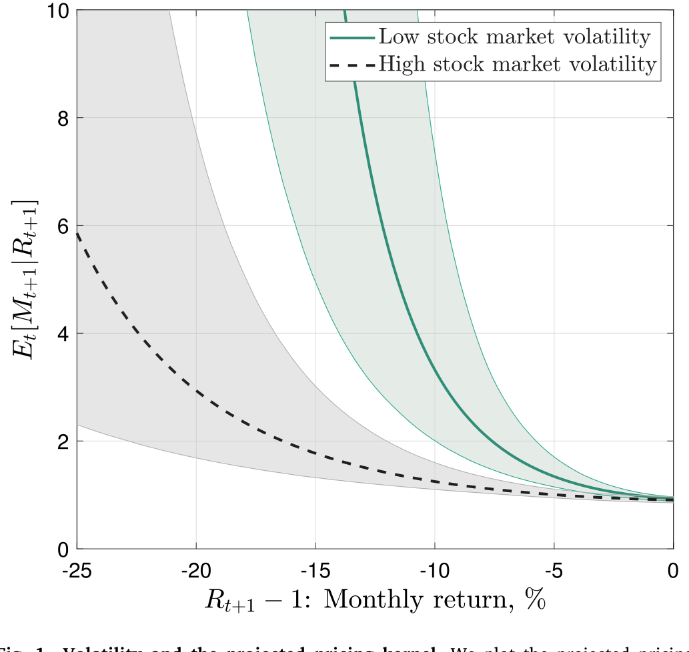
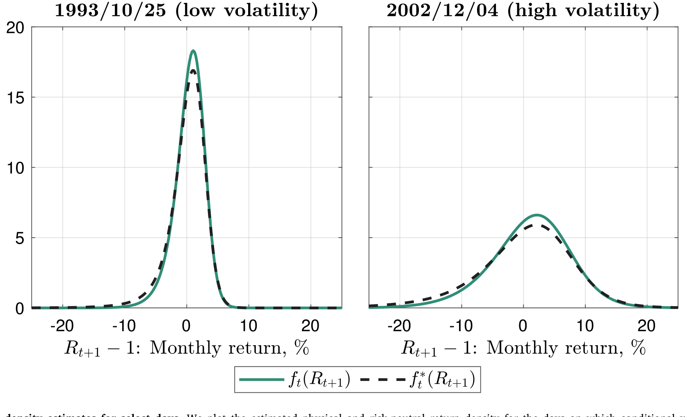
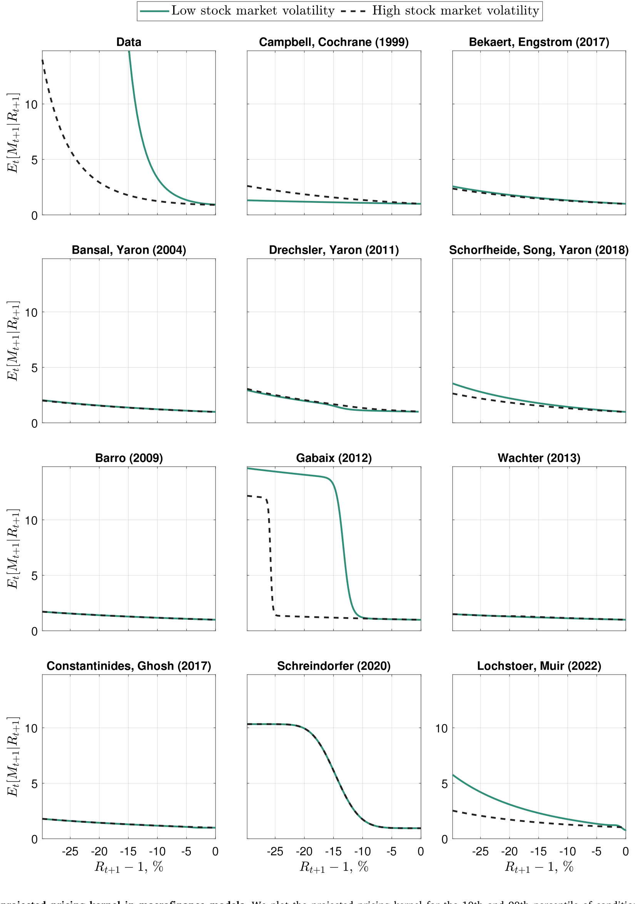
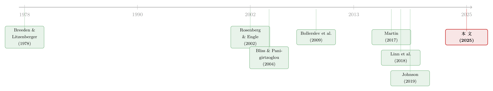

定价核的两副面孔：为什么同样跌 10%，在「平静市」里更让人心痛？
本文读的是 Schreindorfer & Sichert (2025, JFE)：他们用一套「期权 + 已实现收益」的联合极大似然方法，同时估出定价核 (pricing kernel) 和条件物理收益密度。最核心的一个发现是——同样是市场月度下跌 10%，发生在低波动期比发生在高波动期要「痛」得多（边际效用 3.68 对 1.32）。这条随波动率上下「翻转」的定价核，正好解开了困扰金融学几十年的风险-收益之谜，也顺手把 Martin (2017)、Johnson (2019) 等一串结论重新掂量了一遍。
1 引言：一根会「变形」的曲线
先问一个看起来很简单的问题：当美国股市某个月跌了 10%，投资者有多难受？
直觉会说——跌 10% 就是跌 10%，难受程度应该差不多。但资产定价告诉我们，「难受」这件事是要用边际效用 (marginal utility) 来度量的：同样一块钱的损失，在你已经很穷的时候比在你很富的时候更刺痛。把这种「痛感随收益变化」的关系画成一条曲线，就是所谓的定价核在收益上的投影 (projected pricing kernel)，记作 \(E_t[M_{t+1}|R_{t+1}]\)——给定下一期市场收益 \(R_{t+1}\) 时，投资者随机贴现因子 \(M_{t+1}\) 的条件均值。
这条曲线在金融学里早就声名在外：一连串有影响力的论文（Aït-Sahalia & Lo 2000、Jackwerth 2000、Rosenberg & Engle 2002）发现，它居然是收益的非单调 (non-monotonic) 函数——在收益为正的区域有一段诡异的上翘，被称为「定价核之谜 (pricing kernel puzzle)」。
但这篇论文不去纠缠那段老谜题。它盯住的是另一件被忽略的事：这条曲线本身，会随市场所处的「波动率环境」而变形。 平静的市场和动荡的市场里，同样的 -10% 对应着完全不同的边际效用。曲线不是一条，而是一族；它会随波动率上下「翻转」。这个看似细微的时变性，恰恰是全文的核心。
接着，一个自然的问题是：怎么把这条会变形的曲线估出来？
2 识别策略：从期权价格里「反解」出真实概率
这篇文章的方法论起点，是一个无套利下的恒等式。Breeden & Litzenberger (1978) 告诉我们，从指数期权价格里可以非参数地提取出风险中性密度 (risk-neutral density) \(f^*_t(R_{t+1})\)；而 Cochrane (2005) 早已写明，定价核的投影等于风险中性密度与物理密度之比、再用无风险利率缩放：
这个恒等式很迷人，但也很「滑」：式子里有两个未知数——投影定价核和物理密度——却只有一条方程。早期文献的做法，要么给物理密度强加一个参数族（比如正态、Student-t），要么干脆假定一个定价核形状。
但真正关键的一步在于，作者把问题反过来用：与其去猜物理密度长什么样，不如只给定价核一个灵活的参数形式，然后用恒等式把风险中性密度「翻译」成物理密度——
$$f_t(R_{t+1};\theta)=\frac{f^*_t(R_{t+1})}{R^f_t\times M(R_{t+1},\sigma_t;\theta)}$$
——再用真实发生的已实现收益去极大化它的似然：
$$LL(\theta)=\sum_{t=1}^{T}\ln f_t(R_{t+1};\theta)$$
这样一来，物理密度根本不需要属于任何已知分布族；它是把一个（参数化的）测度变换，作用在（非参数的）风险中性分布上的产物。换句话说，估定价核和估物理密度，是同一件事。
那么定价核的「参数形式」怎么写？作者沿用 Rosenberg & Engle (2002) 的思路，把投影定价核的对数写成收益对数的多项式，并强制为正（取指数）：
$$M(R_{t+1},\sigma_t;\theta)=\exp\left\{\delta_t+\sum_{i=1}^{N}c_{it}\times(\ln R_{t+1})^i\right\}$$
而点睛之笔在于：他们让多项式系数随条件波动率 \(\sigma_t\) 变化，
$$c_{it}=c_i\,\sigma_t^{-b\,i}$$
这个写法里嵌着两个有意思的特例。当 \(b=0\) 时，系数不随波动率动，\(E[M|R]\) 就是一条雷打不动、不随时间变形的曲线；当 \(b=1\) 时，定价核变成标准化收益的一个固定函数：
$$M(R_{t+1},\sigma_t;\theta)=\exp\left\{\delta_t+\sum_{i=0}^{N}c_i\times\left(\frac{\ln R_{t+1}}{\sigma_t}\right)^i\right\}$$
也就是说，曲线随波动率「横向等比例拉伸」。介于 0 和 1 之间的 \(b\)，则允许曲线以各种程度变形。于是，「定价核到底随不随波动率变」这个本来很抽象的问题，被压缩成了一个可检验的假设：\(H_0: b=0\)。这正是它比前人（Rosenberg-Engle 逐日单独估、Bliss & Panigirtzoglou 2004、Linn et al. 2018 用矩条件估）高明的地方——既统计有效（极大似然），又能形式化地检验时变性，而且得到的密度严格积分为 1（截距 \(\delta_t\) 不是自由参数，而是为满足这条约束逐日算出来的）。
（把结构模型/期权信息「蒸馏」成可估对象这件事，另一种很不同的做法可参见《把结构模型「蒸馏」成一张查找表：深度代理与期权定价》。）
3 数据
样本是 1990–2023 年的标普 500 指数期权与收益数据。已实现收益用日内的标普 500 期货报价（来自 TickData）——前段用大合约（ticker SP，1990–2003），后段切到更活跃的 E-Mini 合约（ticker ES）。条件波动率 \(\sigma_t\) 用 Corsi (2009) 的 HAR 模型估计；风险中性密度的提取遵循 Beason & Schreindorfer (2022) 的标准实现。整段样本横跨了 2008 金融危机和 2020 新冠两次大波动率冲击——这两段后面会成为「剧情反转」的关键现场。
4 主要结果：曲线在低波动期更陡
第一个、也是最核心的结果，就藏在那条估出来的曲线里。
把投影定价核分别画在条件波动率的第 10 百分位（平静市）和第 90 百分位（动荡市），两条曲线形状迥异：低波动期的曲线明显更陡。具体而言，月度收益 \(-10\%\) 在低波动期对应的平均边际效用高达 3.68，而在高波动期只有 1.32。也就是说，同样的暴跌，在平静市里让投资者「痛」出近三倍。一整套稳健性检验表明，这个结论对参数设定并不敏感。

Figure 1: Volatility and the projected pricing kernel. We plot the projected pricing
为什么这件事如此重要？因为它意味着风险价格是逆周期的 (countercyclical)——市场越动荡，定价核越「平」，承担风险的边际报酬反而越低。这恰好呼应了 Moreira & Muir (2017) 关于逆周期风险价格的论断，但这篇文章第一次给出了风险价格的显式估计。
接着，反转出现了。逆周期的风险价格，听起来像是会削弱风险-收益关系的——波动越高，风险价格越低，那预期收益还涨得起来吗？作者把它拆成两个相反的渠道：波动率上升，一方面因为风险更大而抬高预期收益（经济直觉），另一方面因为风险价格下降而压低预期收益。
谁赢了？当定价核用对数二次（\(N\ge2\)）或更高阶多项式来刻画时，风险效应压过了价格效应：预期收益与条件波动率显著正相关，回归斜率在 5% 或 1% 水平显著；经济上，波动率每上升一个标准差，预期年化收益提高 3.8 个百分点。也就是说，尽管风险价格逆周期，市场依然存在一个强的风险-收益权衡。
而两个对照设定，恰好把这个发现的「机理」照得透亮：用对数线性定价核（即曲线不会变形成凸的），就找不到显著的风险-收益关系；用时不变的对数二次定价核（即曲线不随波动率变平），则得到一个强得多的权衡。但这两个替代设定都拟合很差，在 1% 水平上被基准设定拒绝。结论是：定价核的凸性 (convexity) 和时变性，缺一不可——它们一起，才是从期权里识别风险-收益关系的关键。
这也顺带给「系统性偏度被定价」提供了时间序列证据：当 \(E[M|R]\) 是凸的，Harvey & Siddique (2000) 在理论上预言系统性偏度是一个被定价的风险因子。作者在控制波动率之后做风险-收益双变量回归，发现偏度每下降一个标准差（更负），预期年化收益提高约 1 个百分点；而一旦换成对数线性定价核，这个关系就消失了——与 Harvey-Siddique 的理论完全一致。
那么这套估出来的物理密度长什么样？图 2 画了几个有代表性日子的物理密度与风险中性密度，可以直观看到二者在不同波动率环境下被「掰开」的程度。

Figure 2: Conditional density estimates for select days. We plot the estimated physical and risk-neutral return density for the days on which conditio
（关于风险的「价格」与「数量」如何在风险-收益之谜里纠缠，国债市场上的一个平行讨论可参见《风险的价格与数量：拆开中美国债的「风险-收益之谜」》。）
5 三个应用：把前人的结论重新掂量一遍
有了这条会变形的曲线，作者干了三件「翻旧账」的事。
其一，Martin (2017) 的下界被突破了。 Martin 证明，在「负相关条件 (NCC)」\(\mathrm{Cov}_t[M_{t+1}R_{t+1},R_{t+1}]\le 0\) 成立时，市场的风险中性方差是预期超额收益的一个下界；一旦 NCC 被违反，它反而成了上界。Martin 没有实证检验 NCC，只验证它在多种模型里成立。作者直接拿自己估的预期超额收益去比对：NCC 在波动率大幅飙升时被违反——正是 2008 危机和 2020 新冠那两段。原因正是定价核在高波动期变平，使得 NCC 所要求的「足够陡的斜率」失守。含义是：Martin 的下界，高估了危机期间风险溢价的飙升程度；模拟证据表明这种违反不是估计噪声造成的。
其二，Bollerslev–Johnson 之争有了新裁判。 Bollerslev et al. (2009) 用 OLS 发现方差溢价 (variance premium) 能显著预测股市超额收益；Johnson (2019) 用统计上更有效的 WLS 反驳，认为这种预测力是「伪」的。但两人都栽在同一个地方——他们都用已实现收益当预期收益的代理变量，而这正是 Elton (1999) 在主席演讲里警告过的偏误来源。作者改用预期超额收益对方差溢价回归，得到了高度显著的关系，与 Bollerslev 最初的 OLS 结论一致。
其三，Gormsen & Jensen (2023) 的偏度结论被「拆」成两半。 他们发现股市收益在低波动期更左偏，但这一结论是基于风险中性的偏度。作者指出，波动率影响物理偏度有两个相反渠道：一是抬高风险中性偏度（增加物理偏度），二是让定价核变平（减少物理与风险中性之矩的差异，从而减少物理偏度）。两个渠道在数量上相互抵消，结果物理偏度与波动率并不显著相关。不过，与 Kozhan et al. (2013) 的观察一致，方差溢价和偏度溢价之间存在显著的同向变动——这恰恰解释了为什么 Gormsen-Jensen 会看到风险中性方差与偏度的强相关。
最后，作者把矛头指向了宏观金融模型。他们用十一个机制各异的模型——外部习惯（Campbell & Cochrane 1999、Bekaert & Engstrom 2017）、长期风险（Bansal & Yaron 2004、Drechsler & Yaron 2011、Schorfheide et al. 2018）、罕见灾难（Barro 2009、Wachter 2013、Gabaix 2012）、不完全市场（Constantinides & Ghosh 2017）、失望厌恶（Schreindorfer 2020）、关于波动率的慢移动信念（Lochstoer & Muir 2022）——逐一在有限样本模拟里检验它们能否复制 \(f_t(R_{t+1})\) 和 \(E_t[M_{t+1}|R_{t+1}]\) 的基本特征。结论用作者自己的话说是「令人沮丧的 (disillusioning)」：没有一个模型能接近。它们既抓不住条件收益分布的不对称，也复制不出投影定价核那条陡峭的斜率，更对不上两个函数的周期性变动幅度。这件事很扎心——因为解释股市风险的性质与定价，本就是这些模型的看家本领。

Figure 7: The projected pricing kernel in macrofinance models. We plot the projected pricing kernel for the 10th and 90th percentile of conditional vo
6 文献脉络
这条研究线索的起点，是 Breeden & Litzenberger (1978) 那个奠基性的结果：期权价格里藏着风险中性概率。接着，Aït-Sahalia & Lo (2000)、Jackwerth (2000)、Rosenberg & Engle (2002) 把风险中性密度和物理密度一比，发现了「定价核之谜」，并由 Rosenberg & Engle (2002) 给出了把定价核对数写成多项式来估计的范式——这正是本文的方法论祖先。
然后，一支「以风险中性分布为已知、参数化定价核、用已实现收益做准则函数」的估计流派接力而上：Bliss & Panigirtzoglou (2004) 最大化 Berkowitz 检验的 p 值，Linn et al. (2018) 最小化一个 GMM 准则。本文承袭了这个总思路，但把准则换成了更常规、更高效的极大似然，并保证密度积分为一。

与此并行的，是关于「风险溢价的条件结构」的一系列实证争论：Bollerslev et al. (2009) 的方差溢价预测、Martin (2017) 的预期收益下界、Johnson (2019) 的 WLS 反驳、Gormsen & Jensen (2023) 的高阶矩。本文所处的位置很清楚——它提供了一台能同时看清「风险数量」和「风险价格」的显微镜，于是有资格把上面这些结论一一重审。值得一提的是，Kim (2022) 是与本文同期、独立发展的工作，也研究投影定价核的时变性（基于 Linn et al. 2018 的 GMM），但应用方向不同，且本文的拟合显著更好。
7 评论与延伸（Q&A + 研究方向）
(a) 几个可能的疑问
Q：什么是「投影」定价核？它和真正的定价核 \(M_{t+1}\) 是一回事吗？
不是。\(M_{t+1}\) 取决于全部状态变量；而投影定价核 \(E_t[M_{t+1}|R_{t+1}]\) 是把 \(M_{t+1}\) 对「市场收益」这一个维度取条件期望，等于对所有其他冲击做了平均。它不是线性投影，而是一个一般的非线性条件期望函数。资产定价里，正是这个投影、而非完整的 \(M_{t+1}\)，决定了市场收益如何被定价。
Q：物理密度不假定任何分布族，会不会「过拟合」？
关键在于，灵活性几乎全部来自风险中性密度（它本身从期权非参数提取），而测度变换那一端是高度受限的——整条定价核只由少数几个参数 \((b,c_1,\dots,c_N)\) 刻画。所以模型的物理密度虽然形状极其灵活，自由度却很省；作者也用 Vuong (1989) 这类非嵌套检验和样本外比较来防止过度拟合。
Q：为什么「定价核在低波动期更陡」反而能救活风险-收益权衡，而不是杀死它？
因为风险-收益权衡看的是预期收益对波动率的反应，它由「风险数量上升」和「风险价格下降」两股力量净决定。低波动期曲线更陡（高波动期更平）说明价格是逆周期的，但只要曲线足够凸，风险数量效应就压过价格效应——净效应仍是波动越高、预期收益越高（3.8 个百分点）。凸性是胜负手。
Q：用「预期收益」而非「已实现收益」做回归，会不会只是把答案「设计」进去了？
这是最该警惕的地方。预期收益本身是模型估出来的，若估计方法天然偏向某个结论，回归就成了循环论证。作者的辩护是：预期收益来自期权 + 已实现收益的联合似然，识别力主要来自期权横截面而非被解释的那条收益序列；而且结论（如方差溢价显著）与 Bollerslev 最初的 OLS 独立吻合。但这仍是外部读者需要盯紧的识别软肋。
Q：Martin 下界被违反，是不是说明 Martin (2017) 错了？
不能这么说。Martin 的下界在 NCC 成立时是对的；本文说的是 NCC 在波动率极端飙升时被违反，所以下界在那些时点不再是下界。换言之，这是对 Martin 边界适用范围的实证刻画，而非证伪——它告诉我们危机期间这条边界会高估风险溢价的尖峰。
Q：宏观金融模型「全军覆没」，结论会不会太狠？
作者比的是条件收益分布与投影定价核的一组矩，且在有限样本模拟里比，已经尽量对模型公平。但「失败」的判定依赖于哪些矩被选中、波动率代理怎么算。换一组矩或换一个波动率度量，排名是否稳健，是值得追问的。不过「抓不住不对称 + 抓不住陡斜率」这两条相当基本，模型确实难辩。
(b) 几个可能的研究问题与提案
1. 把这套方法搬到公司债 / 信用市场。
【经济故事】股票期权能反解出股市的投影定价核，那么用 CDX/CDS 期权或信用利差期权，是否能反解出信用市场的定价核？信用损失高度左偏，定价核在「违约尾部」的陡峭程度，直接关系到信用溢价之谜。
【可行性】中。信用期权流动性远不如指数期权，风险中性密度的非参数提取会更噪；识别需要足够密的行权价网格。数据上 CDX 期权可得但样本偏短，doable 但要谨慎处理尾部。
2. 外资持有人结构与投影定价核的时变性。
【经济故事】如果定价核随波动率「变平」反映的是边际投资者的轮换（危机时谁在场内承接风险？），那么不同投资者结构的市场，定价核的逆周期程度应当不同。外资占比高的市场，是否定价核更「平」、风险-收益权衡更弱？
【可行性】中偏低。需要把本文的期权估计法逐国复制（许多市场期权数据稀薄），再与持有人结构（如 TIC、各国登记数据）匹配。识别靠跨国/跨时变异，内生性强，属于有意思但难做扎实的方向。
3. 流动性冲击与定价核斜率的高频联动。
【经济故事】2008、2020 两次 NCC 违反都发生在波动率飙升、同时流动性枯竭之时。定价核变平到底是「风险价格」现象，还是被做市能力/流动性约束驱动？把投影定价核的斜率对市场流动性指标（买卖价差、做市商资产负债表）回归，可以分离这两种解释。
【可行性】高。本文已逐日估出斜率，流动性指标（如 TED、做市商杠杆、期权买卖价差）现成可得，做一个高频时间序列回归门槛不高，是最 doable 的延伸。
4. 用投影定价核重审「定价核之谜」的正区域上翘。 【经济故事】作者在在线附录里说正区域的非单调性依然存在。若上翘程度也随波动率变形，那 Martin & Papadimitriou (2022) 异质信念的均衡解释能否定量匹配这种时变？ 【可行性】中。需要把本文估计扩展到正区域并与异质信念模型对接，理论-实证结合，工作量不小但路径清晰。
8 我的判断
这篇文章最实在的贡献，是把一个原本抽象的对象——投影定价核的时变形状——做成了可估、可检验、可证伪的东西，并用它当一把统一的尺子，把风险-收益之谜、Martin 下界、方差溢价预测、高阶矩、乃至整代宏观金融模型，全部重新量了一遍。一个参数 \(b\) 就把「定价核随不随波动率变」变成一个假设检验，这种把大问题压缩成可检验命题的手艺，是全文最漂亮的地方。
要说对识别的担忧，最大的一处仍是「预期收益」的内生性：本文几乎所有「翻旧账」的应用，都建立在自己估出的预期收益之上，而这条预期收益又依赖于定价核的参数设定。虽然作者用对照设定、非嵌套检验和模拟做了大量防御，但「先估出预期收益、再用它去检验关于预期收益的理论」这条逻辑链，外部读者有理由要求更多的样本外验证。其次，风险中性密度的提取对深度虚值期权的报价质量高度敏感，而危机期间——也正是 NCC 违反发生的时点——恰恰是期权数据最脏的时候；NCC 违反究竟是经济现象还是尾部估计噪声，这一点虽有模拟撑腰，仍值得用更独立的数据源去夹证。
后续我最想看到的，是把这条「会变形的定价核」接到流动性和投资者结构上去：定价核在高波动期变平，到底是偏好/风险价格的逆周期，还是边际定价者被流动性约束换了人？这两种解释对政策含义完全不同，而本文逐日的斜率估计，已经为回答它备好了第一块积木。
参考文献
- Aït-Sahalia, Y., Lo, A.W. (2000). Nonparametric risk management and implied risk aversion. Journal of Econometrics 94(1–2), 9–51.
- Bansal, R., Yaron, A. (2004). Risks for the long run: A potential resolution of asset pricing puzzles. Journal of Finance 59(4), 1481–1509.
- Barro, R.J. (2009). Rare disasters, asset prices, and welfare costs. American Economic Review 99(1), 243–264.
- Bliss, R.R., Panigirtzoglou, N. (2004). Option-implied risk aversion estimates. Journal of Finance 59(1), 407–446.
- Bollerslev, T., Tauchen, G., Zhou, H. (2009). Expected stock returns and variance risk premia. Review of Financial Studies 22(11), 4463–4492.
- Breeden, D.T., Litzenberger, R.H. (1978). Prices of state-contingent claims implicit in option prices. Journal of Business 51(4), 621–651.
- Campbell, J.Y., Cochrane, J.H. (1999). By force of habit: A consumption-based explanation of aggregate stock market behavior. Journal of Political Economy 107(2), 205–251.
- Corsi, F. (2009). A simple approximate long-memory model of realized volatility. Journal of Financial Econometrics 7(2), 174–196.
- Elton, E.J. (1999). Presidential address: Expected return, realized return, and asset pricing tests. Journal of Finance 54(4), 1199–1220.
- French, K.R., Schwert, G.W., Stambaugh, R.F. (1987). Expected stock returns and volatility. Journal of Financial Economics 19(1), 3–29.
- Gabaix, X. (2012). Variable rare disasters: An exactly solved framework for ten puzzles in macro-finance. Quarterly Journal of Economics 127(2), 645–700.
- Glosten, L.R., Jagannathan, R., Runkle, D.E. (1993). On the relation between the expected value and the volatility of the nominal excess return on stocks. Journal of Finance 48(5), 1779–1801.
- Gormsen, N., Jensen, C. (2023). Higher-moment risk. Journal of Finance (forthcoming).
- Harvey, C.R., Siddique, A. (2000). Conditional skewness in asset pricing tests. Journal of Finance 55(3), 1263–1295.
- Johnson, T.L. (2019). A fresh look at return predictability using a more efficient estimator. Review of Asset Pricing Studies.
- Linn, M., Shive, S., Shumway, T. (2018). Pricing kernel monotonicity and conditional information. Review of Financial Studies 31(2), 493–531.
- Martin, I. (2017). What is the expected return on the market? Quarterly Journal of Economics 132(1), 367–433.
- Moreira, A., Muir, T. (2017). Volatility-managed portfolios. Journal of Finance 72(4), 1611–1644.
- Rosenberg, J.V., Engle, R.F. (2002). Empirical pricing kernels. Journal of Financial Economics 64(3), 341–372.
- Schreindorfer, D. (2020). Macroeconomic tail risks and asset prices. Review of Financial Studies 33(8), 3541–3582.
- Schreindorfer, D., Sichert, T. (2025). Conditional risk and the pricing kernel. Journal of Financial Economics 171, 104106.
- Wachter, J.A. (2013). Can time-varying risk of rare disasters explain aggregate stock market volatility? Journal of Finance 68(3), 987–1035.